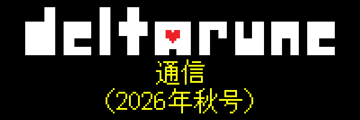

秋ですよ……ついに、夏が終わった！信じられない！
……
クリスマス用の飾りを出してくるの、やめてもらっていいですか？

|

|

Chapter 6の開発は順調です。
現在は、構造上は完成しているラフの状態で、最初から最後までプレイできるようになりました。マップも、イベントも、バトルも、全部が入っています（ただし、場合によってはプレイしなくてもいい、とあるイベント1つだけ、制作がちょっと長引いています……）。
みなさんがこのメルマガを読んでいる頃には、ローカライズと、先行テストも少し始まっているはずです。おおかた完成しているように見えますが、一部の重要なシーンと細部の演出はまだ仕上がっていないので、本格的なテストを始められる状態になるには、もう少しかかります。
今回のチャプターは短めとはいえ、可能なかぎりよい仕上がりにしたいので、急いで進めるわけにはいかないんです。
それじゃあ、Chapter 6から1つ、本当にどうでもいいシーンをお見せしましょうか……


Chapter 7の制作には、まだ取りかかったばかりです……
開発チームのメンバーにはChapter 7のイベントとセリフの読み聞かせをしたんですが、ストーリーが重要なポイントにさしかかったところで読むのをやめて……この先で何が起きるかは、もっと先までゲームを作り終えるまで教えてあげない、と伝えました。
みんな、たしかにそのほうが楽しいと納得してくれました。
Chapter 6の作業を終えたメンバーたちは、Chapter 7の制作に取りかかっています。僕としては、これまでのチャプターを開発していた頃と違って、今回は何をどうすればいいのかつかめている実感があるので、かなり自信を持って取り組めています……！

もう、だい～ぶ前のことですが、友だちのMarinaにお願いして、Chapter 5用に「Apple Girlington」というキャラクターをデザインしてもらっていました。最初のエリアでおいしいリンゴを売ってくれるお店の店主にするつもりだったんです。言うまでもなく、そのおいしいリンゴを気に入ってもらえないと、彼女は怒ります……
でも結局は、モモとキャラがかぶりすぎている気がしてボツにしました。それに、「リンゴ」はこのゲームのストーリー上、いろいろと別の意味合いを持つようになったので、ここで出てくるとちょっとヘンだなと思ったんです。
それでも、キャラデザがすばらしくて、Marinaもあれから何年ものあいだに何度も描いてくれたので、全部お見せします！ぜひご覧ください！！
Trevor Alan Gomes氏による「DELTARUNE Piano Collections」の新作が公開されました。第1弾に収録されている曲はChapter 5のクレジットに使わせてもらったので……僕もチェックするのが楽しみです！

なんかいろいろ、やっちゃった★


毎回言っているような気がしますが、Chapter 4以降、チームの人数が増えたので、『DELTARUNE』の開発を最大限にスピーディに進めていくことに、僕は自分の時間をよりたくさんつぎ込まないといけなくなりました。進捗のお知らせがないとイライラしてしまうかもしれませんが、「知らせることがない」イコール「よい知らせ」と考えてもらえればと思います。
Chapter 6のローカライズが完了したら、またお知らせします！